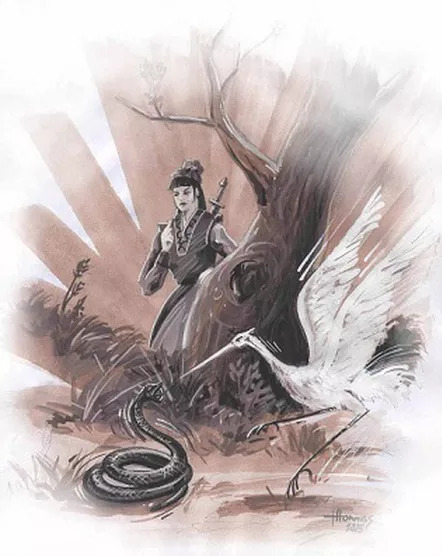

Análise da História do Wing Chun: Ng Mui a Yip Man
Por Thomas Pinheiro
As técnicas em desenvolvimento, as quais seriam mais tarde chamadas de Wing Chun, não foram ensinadas ou mostradas por Ng Mui a outros monjes ou possíveis alunos do templo, acredita-se na possibilidade de Ng Mui criar este estilo para que fossem treinados rebeldes em um espaço de tempo mais curto que os demais estilos do templo.
Ng Mui incorporou características da garça e da serpente, tais como a agressividade, a percepção do espaço, a maneira precisa, e o emboscar para a captura da presa. Ng Mui utilizou sua criação de técnicas de combate para completar o que já conhecera e aprendera; tida como expert em estilos internos de kung fu (estilos que valorizam sensibilidade, relaxamento corporal como o tai chi chuan, pa kua, ching i).
Atualmente existem inúmeros questionamentos em relação à figura da monja Ng Mui, como por exemplo, se seria um homem e não uma mulher? Se teria realmente existido? Se havia permissão da estadia de mulheres nas dependências do templo? Dentro do templo havia uma sala chamada Wing Chun, onde, provavelmente a arte era praticada, daí se deu o seu nome? Infelizmente não existe documentação que possa estabelecer uma real história do estilo wing chun, por isso prefiro relatar aquela a qual fora transmitida por Yip Man. Alguns monges, incluindo Ng Mui, eram na realidade rebeldes contra o poder da época, e sendo assim, o templo Siu Lum constituía-se em uma ameaça ao soberano Ching.
Muitos monjes morreram na tentativa de fuga, porém Ng Mui e mais quatro famosos lutadores, Pak Mei, Fung Do Tak, Mui Hin e Chi Shin, combateram com heroísmo e conseguiram escapar, cada qual rumando para diferentes localidades da China no intento de continuar a oposição contra a soberania vigente. As técnicas aprendidas por Yin Wing Chun de Ng Mui foram mantidas exclusivas até Wong Wah Bo que então, por conhecer um empregado da companhia de ópera chamado Leung Yee Tai e estabelecer amizade, trocaram técnicas de armas e informações sobre seus estilos.
Leung Tai era um especialista no uso do bastão longo (instrumento que era utilizado para empurrar os juncos que transportavam os atores e também manipulado como arma letal), aperfeiçoou o sistema que aprendera, tornando-o mais simples e econômico. Leung Yee Tai aprendera técnicas de bastão com um dos monjes que houvera escapado do templo Shao Lin, Chi Shin, um perito nas técnicas de bastão.
Possivelmente tinha também habilidades em algum estilo de shaolin o que somado a algum aprendizado com Wong Wah Bo levaria a desenvolver algum estilo com semelhanças ao Wing Chun Kuen. Wong Wah Bo e Leung Yee Tai ensinaram a Leung Jan que então passou a treinar de maneira tão intensa que logo se transformou num combatente extremamente habilidoso, obtendo a reputação de melhor lutador dos arredores da província de Fatshan. Por sua vez, Leung Jan ensinou o Wing Chun a seus dois filhos, Leung Bik e Leung Chun. Ensinou também a um amigo, Fung Wah, e ainda teve como ultimo discipulo, Chan Wah Shun.
Como sua reputação crescia, Chan Wah Shun passou a ensinar wing chun, porém para poucos alunos. Deste grupo de alunos de Wah Shun, como do momento do aprendizado de Leung Yee Tai e também da época em que Ng Mui permanecera no templo Siu Lun é provável existirem pessoas que receberam algumas técnicas do estilo wing chun, através de trocas de conhecimentos, que associadas a outros já existentes estilos de kung fu deram origem a variações do estilo Wing Chun, porém com maneiras e estruturas muito diferentes as quais seriam transmitidas por Leung Bik.
O ultimo aluno de Chan Wah Chun foi Yip Man que posteriormente treinou por 3 anos com Leung Bik. Após a morte de Yip Man e a partir do começo dos anos de 1990, começou o surgimento de um sem fim de estilos com nomenclaturas parecidas a Wing Chun.
Há praticantes que contam uma história de treinar com Yip Man e depois com outra pessoa e por aí vai, fazendo uma miscelânia de movimentos e teorias aparecendo como únicos representantes de um wing chun tido puro, Realmente há estilos com nome parecido e com história próprias, mas infelizmente parece que pessoas má intencionadas e com objetivos escusos vêm se apropriando e divulgando sabe-se lá o que e de que forma... Com certeza, Yip Man utilizou um método de ensino e divulgação que o manteve afastado do que hoje chamamos de marketing, e não deixou-se ser explorado enquanto vivo.
Não deixou ninguém como seu sucessor oficial, apenas dedicou-se a ensinar, e que coubesse a cada um levar adiante por conta própria. Para a visão de um mundo comercial onde precisamos ter respostas para tudo e todos, nomenclaturas e rótulos, a maneira antiga é dificil de se encaixar.